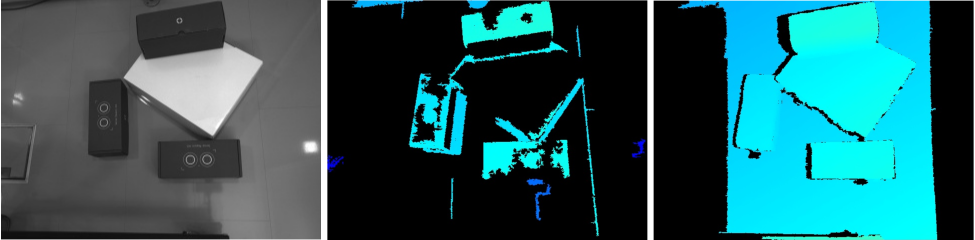
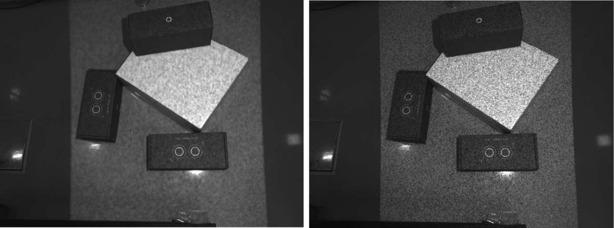
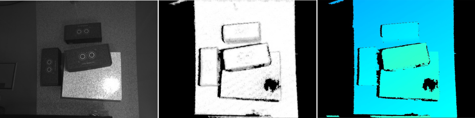

Configuring the rc_randomdot projector¶
This tutorial shows how to set up the rc_randomdot projector with the rc_visard or rc_viscore to increase the density of depth images, as shown in Fig. 7. This is particularly recommended for objects and workspaces with little or no visual texture.


Fig. 7 A scene including objects without visual texture (i.e. the intensity of the image is uniform over large parts of the scene) and the computed depth image without the rc_randomdot projector (center) and with the rc_randomdot projector (right).
Note
This tutorial assumes that the previous tutorial Tuning of camera images has been completed.
Before we start¶
Before going through this tutorial, the following prerequisites should be met.
- The rc_visard, rc_cube or rc_reason_stack are running the latest firmware (version 26.07) and the rc_visard’s license includes the IOControl module. This can be verified on the page of the Web GUI.
- If an rc_visard is used, the rc_randomdot projector, the network cable connecting it to the rc_visard, and a 24 V, 60 W power supply are available.
Warning
Please ensure that a 24 V, 60 W power supply is used to power the rc_visard and the rc_randomdot projector together.
Note
The rc_randomdot projector is controlled via the GPIO Out 1 of the rc_visard or rc_viscore (see IO and Projector Control). In this tutorial, Out 1 mode refers to the rc_randomdot projector mode.
Mounting the projector¶
This section only applies to the rc_visard. The rc_viscore has an integrated projector.
Mounting the projector is described in detail in the projector’s manual. Please see Installation.
Note
For projectors sold until 12/2020, the mounting instructions are available on the Roboception website.
Focusing the projector¶
To configure the focus, the rc_randomdot projector should first be turned on permanently. This can be done on the page of the Web GUI by setting the Out 1 mode to High.
Before focusing the projector, the lens protection tube must be removed temporarily. Unscrew the lens protection tube carefully, until the rings of the lens are visible. The focus can then be adjusted by rotating one of the rings of the lens until the random dot pattern is sharp (Fig. 8).


Fig. 8 Blurred (left) and sharp (right) random dot pattern.
Configuring the projector brightness¶
To tune the projector brightness, set the Out 1 mode to ExposureAlternateActive on the page of the Web GUI. Next, on the Camera page, set the exposure to Auto and the Auto Exposure Mode to AdaptiveOut1.
The status line below the live images on the Camera page now shows the Out1 Reduction value as a percentage. This value describes the reduction in brightness of the image without projection compared to the image with projection. The value should be between 20% and 30%. If it is outside this range, the brightness of the projector should be adjusted.
To adjust the projector brightness, rotate the aperture ring of the projector lens.
After this basic adjustment, place the darkest object expected in the application in the field of view of the sensor. If this dark object is not clearly visible in the depth image on the Depth Image page of the Web GUI, the projector brightness must be increased, even if the reduction value is already high.
The brightness of the rc_viscore’s projector can also be changed by adjusting the Out1 Ratio parameter. This parameter is available on the camera page by expanding the IOControl Settings block. A lower Out1 Ratio decreases the projector brightness.
Selecting projector working mode¶
Single shot mode¶
If the projector is used in combination with rc_reason modules (e.g. ItemPick, BoxPick or SilhouetteMatch), it can be operated in single shot mode. This means that it will only be activated on demand, when the module requests a new depth image.
This mode is enabled by setting the Acquisition Mode to Single + Out1 on the Depth Image page of the Web GUI.
Continuous mode¶
If the projector must be used in continuous mode (i.e. stereo matching is performed continuously without a trigger), the appropriate Out 1 mode must be set on the Web GUI’s page.
By default, the Out 1 mode of the camera is set to Low, i.e. the projector is off.
Typically, the user should select the ExposureAlternateActive Out 1 mode, in which the rc_randomdot projector is switched on only for the exposure time of every second image. Images with the projected pattern are used to compute depth images. Images without the projected pattern can be used as texture or for other image processing modules.
Configuring the exposure¶
As a final step, go back to the Web GUI’s Camera page and set the exposure time, either manually, as explained in the Improving image quality section of the Tuning of camera images tutorial, or automatically using auto exposure. In the latter case, the Auto Exposure Mode should be set to AdaptiveOut1 to avoid overexposure caused by the projector.
Note
If the exposure is set to automatic mode, it may take a few seconds after the projector is turned on until the exposure and gain settings become stable.
More optimization tricks¶
In some cases, the density of the depth image can be further optimized by changing the focus of the rc_randomdot projector to introduce some blur in the projected pattern. This can be done while looking at the Confidence image on the Web GUI’s Depth Image page and trying to obtain as many white pixels as possible.
If the camera image contains highlights that are not reconstructed in the depth image (Fig. 9), check whether these highlights are caused by the rc_randomdot projector (e.g. by simply turning the projector off). In such cases, it is recommended to use the Double-Shot mode available on the Depth Image page.
Alternatively, for the rc_visard, the mounting of the rc_randomdot projector can be changed to obtain a different angle between the camera and the projector. Reducing the aperture of the projector can also help remove highlights.


Fig. 9 Highlight in the camera image due to the rc_randomdot projector.